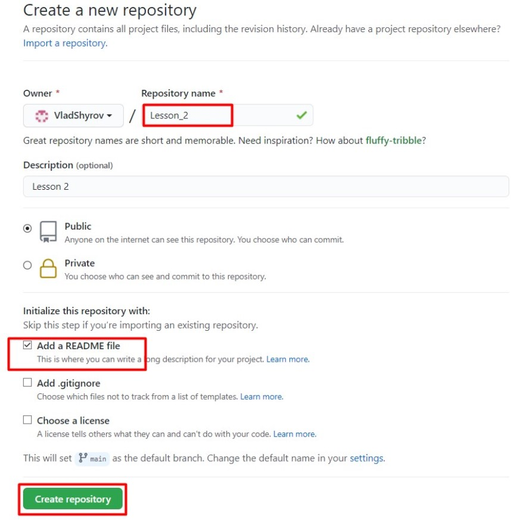
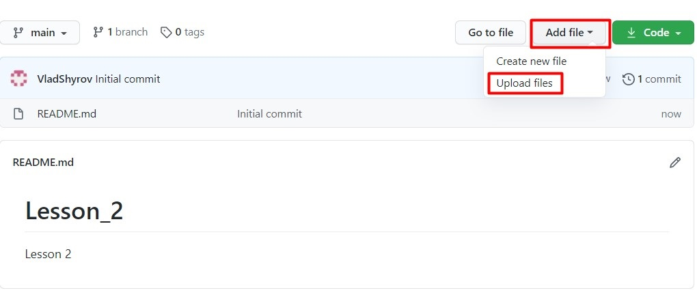
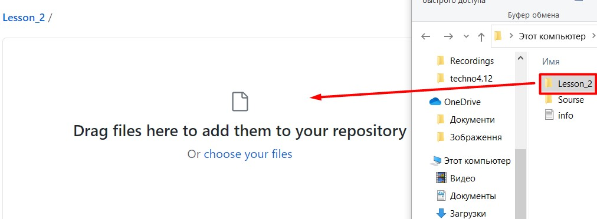
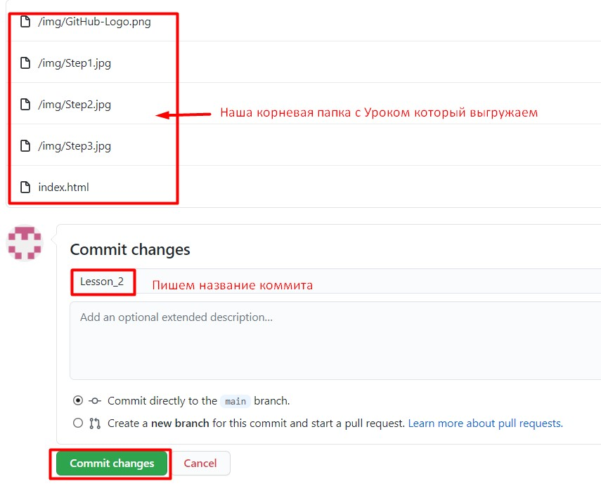
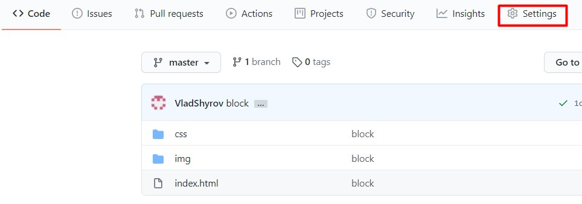
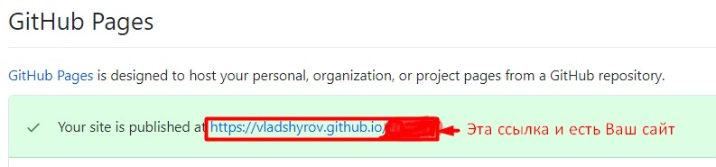

Если ваш сайт — это статические HTML-страницы, то необязательно приобретать хостинг, можно воспользоваться сервисом GitHub Pages. Для этого у вас должен быть аккаунт на Гитхабе
Шаг 1. Создание нового репозитория
Для создания репозитория заходим на сайт Гитхаба и в блоке «Your repositories» нажимаем кнопку «New repository»
Теперь нам нужно заполнить параметры нового репозитория. Важно, чтобы название репозитория было в виде «username.github.io», где username — имя вашего аккаунта на Гитхабе. В моём примере это будет «VladShyrov.github.io». Обязательно установим галочку «Initialize this repository with a README». А затем нажмём кнопку «Create repository».
Форма создания репозитория
Шаг 2. Загрузка файлов
Репозиторий создан, теперь нужно загрузить файлы. Для этого необязательно клонировать репозиторий к себе на компьютер или постигать другие нюансы работы с Гитом — можно воспользоваться интерфейсом Гитхаба. Давайте нажмём кнопку «Upload files».
Интерфейс репозитория в Гитхабе
Затем перетащим файлы в появившееся поле для загрузки.
Интерфейс загрузки файлов в репозиторий Гитхаба
Добавим комментарий к нашему коммиту и нажмём кнопку «Commit changes».
Загрузка файлов в репозиторий
Готово! Файлы загружены в репозиторий.
Шаг 3. Проверка работы сайта
Чтобы проверить работу сайта, достаточно перейти в свой Коммит нажать «Settings» и прокрутить скрол до «GitHub Pages»
 Готово! Теперь эту ссылку вы можете скинуть своему другу.
Поздравляю у Вас всё получилось!
Вывод:
Как видите проект очень легко загружается на сайт, да GitHub — крупнейший веб-сервис для хостинга IT-проектов и их совместной разработки. Очень хорошо подходит для обучения что бы показывать на хостинге свою проделаною работу, в компаниях его используют для того что бы над одним проектом работало много людей, тем самым они могут выгружать и вносить свои вправки подписывая их Коммитами, я бы своими словами сказал что это Save в игре когда проходишь какойто уровень и тут тебе нужно срочно уходить и ты сохраняешь, а когда вернёшься продолжешь с того же места где закончил. Выделил бы огромный плюс этого сервиса так как хранится всё в облаке, можно работать с любого рабочого места, тоесть если что то случится с Вашим компом (Например: винчестер полетел Вы всегда сможете открыть, редактирывать свой проект и закончить работу). Всем счастья!